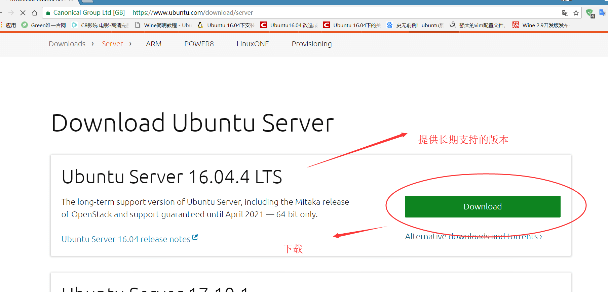
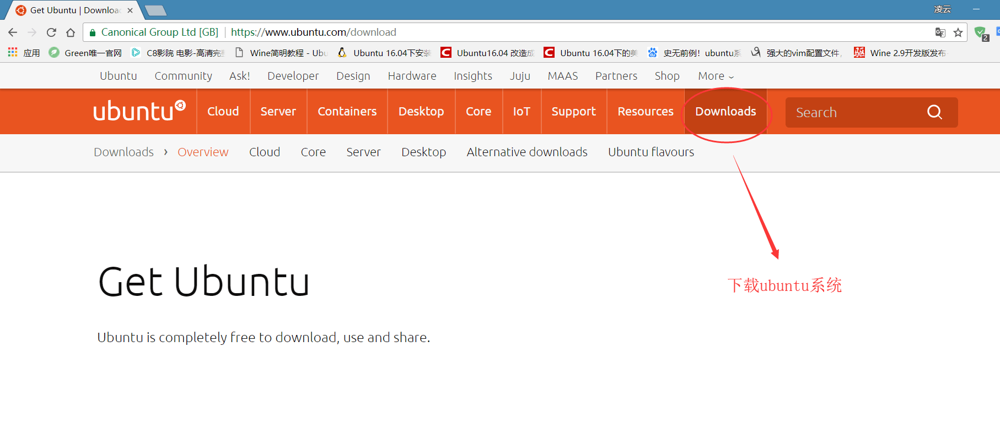
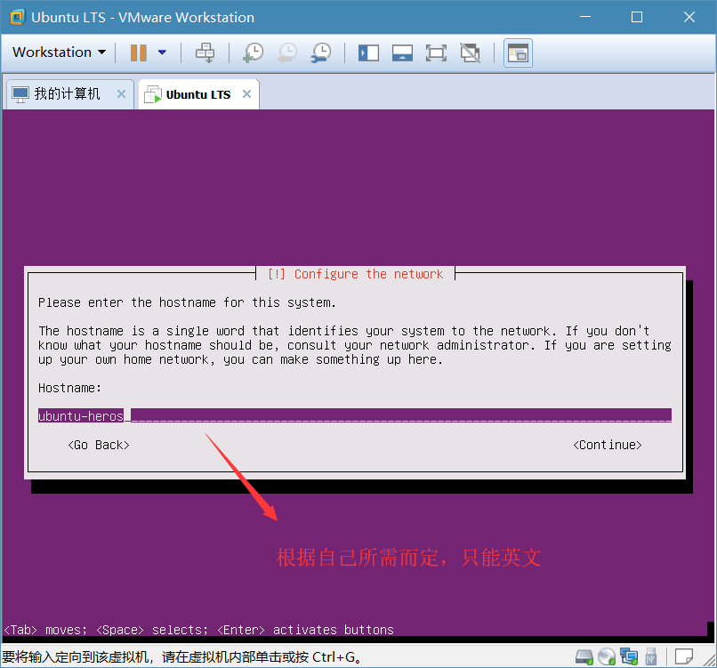
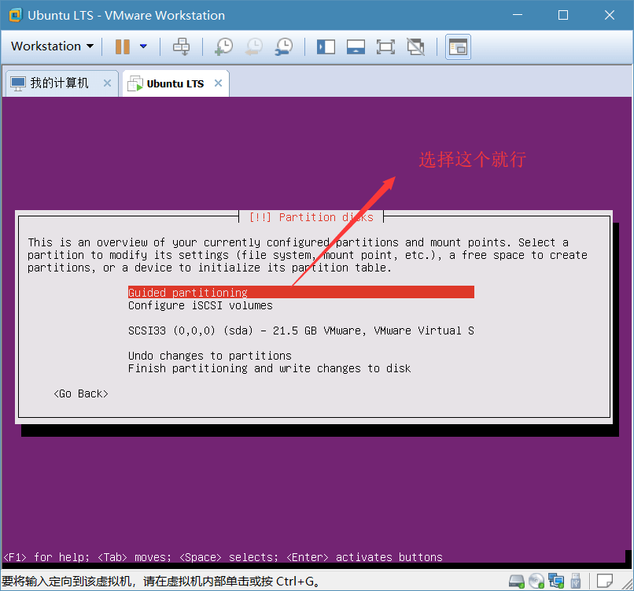
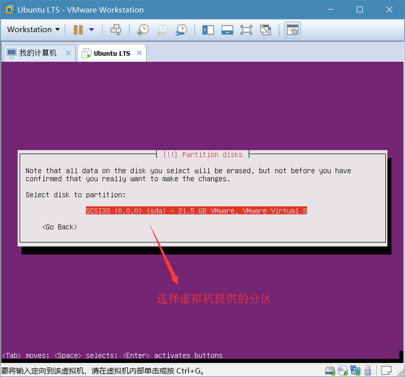
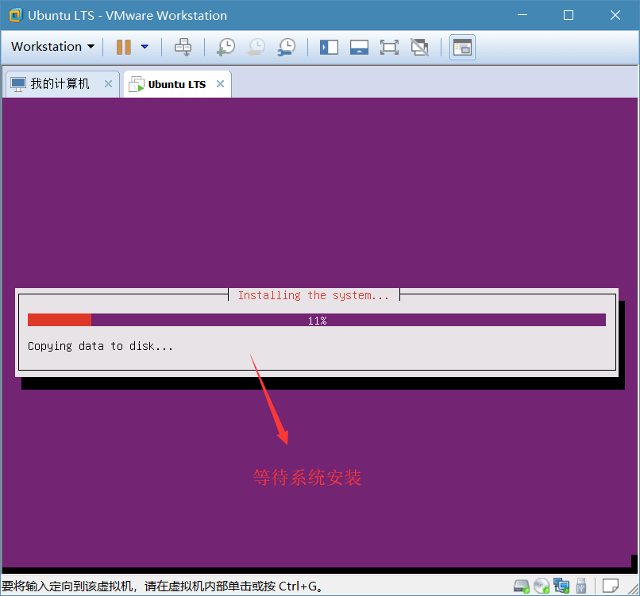
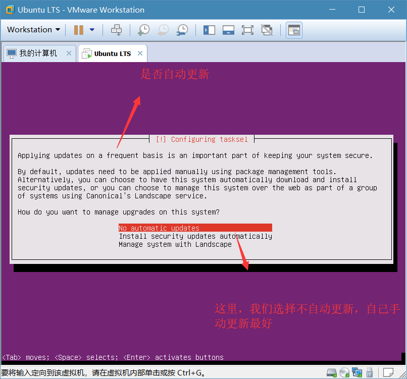
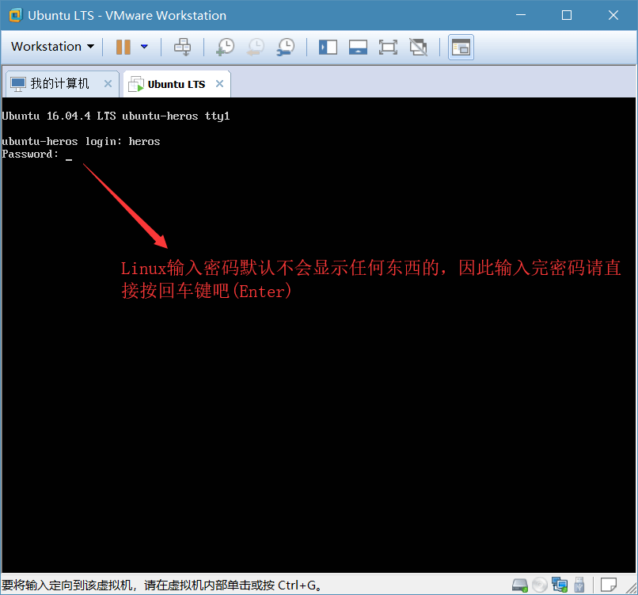
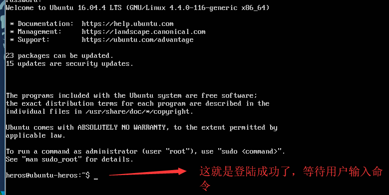
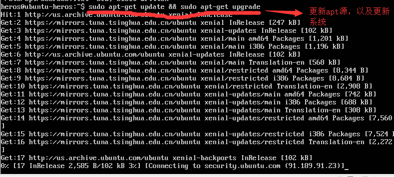

用虚拟机(VMware)安装Ubuntu Server
去官网下载Ubuntu Server(这里是纯字符界面的系统)


打开VM软件，并新建一个虚拟机
启动虚拟机并安装系统
按回车键(“Enter”)选择
选择完后，会让你选择语言，我们选择English
接着选择哪个地区，这里选择United States(美国)
它又会弹出一个窗口，是否检测键盘布局，选择否，默认就行
紧接着，选择键盘标准，选择English(US) 中国的键盘是遵循美式的
等待该系统设置
接着，我们设置该系统的hostname 根据自己所需而定

对这个用户的完整称呼
接着，设置自己的用户名
然后，设置密码需要重新输入一遍
如果密码太简单，它会弹出是否使用弱口令(密码) 选择是
又会弹出是否加密主目录， 没必要 选择NO
又会检查时区的设置，联网自动帮你矫正好，直接下一步就行了
接着分区，这里我们默认系统分区就行，如果自己想要更明确的分区，就需要手动分区(请自己去百度)


等待系统安装。。。

又会弹出是否需要代理服务什么的，不需要 跳过就行了
等待所需软件安装完毕。。。
是否自动更新，这里我们选择 不自动更新(当然你可以选择自动更新)

它又会让我们选择安装那些服务套件功能，只要Samaba 局域网共享与OpenSSH远程控制Linux，以及默认standard system utilities
等待安装完成。。。然后引导分区结束安装
又会弹出这样的提示，确认即可
重启后，进入登录界面
登录Ubuntu

登陆成功后，等待用户输入

开始Linux之旅吧!
可选
添加国内源
- 加入国内的源，默认是外国的因此下载默认软件速度很慢，就需要我们手动加入了。
这里是国内目前常用的源
阿里源 https://mirrors.aliyun.com/ubuntu/
网易源 http://mirrors.163.com/ubuntu/
清华源 https://mirrors.tuna.tsinghua.edu.cn/ubuntu/ - 输入sudo vim /etc/apt/sources.list (善于利用linux的tab自动补全) 输入密码修改
- 我们开始更新系统sudo apt-get update && sudo apt-get upgrade

如果有让我们输入选项，选择是即可 Y 以后的选项都是如此
配置Samaba
Samaba让Windows也能访问Linux的文件1
sudo vim /etc/samba/smb.conf
例如1
2
3
4
5
6
7
8
9workgroup = WORKGROUP windows主机
[fileshare]
comment = 共享名
path = /home/heros 共享路径
browseable = yes 可以浏览
writeable = yes 可写
available = yes 可用
valid users = heros 允许访问用户
ready only = no 不只读
使用系统用户1
sudo smbpasswd –a heros 它让你设置密码
完成后，然后重启samba服务1
sudo service smbd restart
windows的资源管理输入//ip地址就行了，提示输入用户名与密码就可以访问Linux的文件目录了
配置ftp
安装ftp服务1
sudo apt-get install vsftpd 按“y”确认安装
修改配置文件1
sudo vim /etc/vsftpd.conf
将以下配置的#注释去掉 找#按”x”键可快速删除1
2write_enable=YES 可写
utf8_filesystem=YES 以utf8编码传输
重启服务1
sudo service vsftpd restart